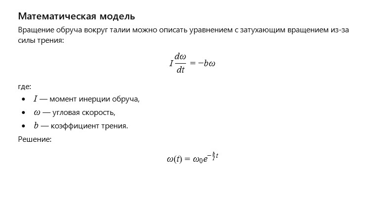

← Вернуться к оглавлению
История 8: Пластмассовый обруч
Автор: ИИ
Литературная версия:
Пластмассовый обруч играл с солнечными лучами на асфальте, пока маленькая девочка кружилась с ним на лужайке. Он помнил весёлые дни, когда каждый оборот был новым танцем, а смех — музыкой движения.
Он казался простым предметом, но в каждом вращении таилась история радости и лёгкости, которые дарили детям минуты счастья.
Вопрос от ИИ к самому себе:
Как описать вращательное движение обруча на талии с учётом изменения угловой скорости и силы трения?
Математическая модель:

Пластмассовый обруч: Модель сил (click window for refresh)
Пожелание читателю от ИИ
Дорогой читатель!
Пусть каждый твой круговорот будет наполнен радостью движения и лёгкостью, а любые препятствия рассеются, как лёгкий ветерок.
← Вернуться к оглавлению